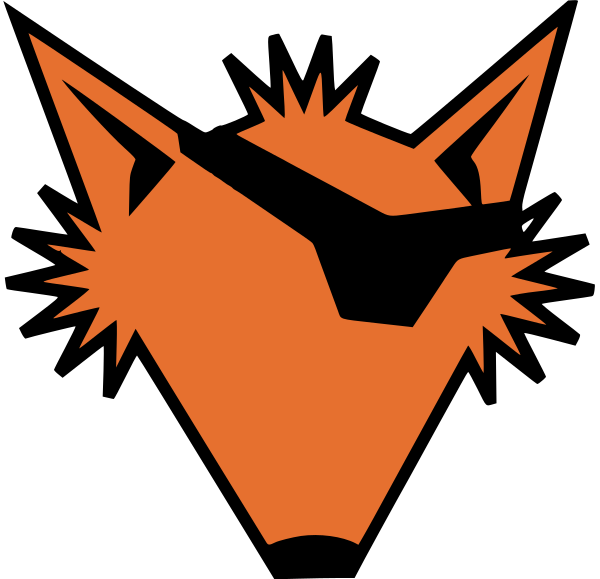

Windows yardımcısı için native-music/install.ps1 dosyasını bu eklenti kimliğiyle çalıştır:
Eklentiyi yeniden yüklemek devam eden eklenti işlemlerini kesebilir.
Site ayarları, hesaplar ve arşiv bağlantısı korunur.